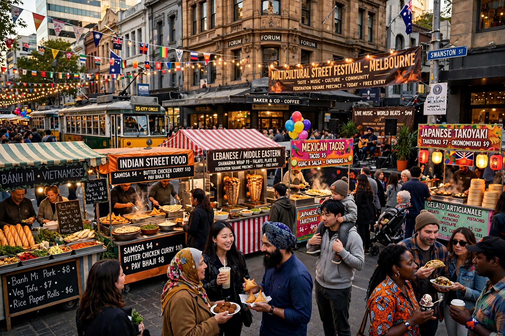

Multiculturalism in Australia is the official policy and social reality by which Australia, one of the world's most ethnically diverse nations, accepts and encourages the cultural diversity of its population. Following the dismantling of the White Australia policy between 1966 and 1973, multiculturalism was adopted as government policy under Prime Minister Gough Whitlam in 1973, and has been maintained, with variations, by successive governments.

For most of the 20th century, Australian immigration policy was governed by the White Australia policy, formally begun with the Immigration Restriction Act 1901. After the Second World War, Australia launched a mass immigration program under the slogan "populate or perish," initially favouring British and then other European migrants. The policy was progressively dismantled by the Holt government in 1966 and abolished by the Whitlam Labor government in 1973.
In 1978 the Galbally Report recommended programs and services to support migrant communities, leading to the establishment of the Australian Institute of Multicultural Affairs and expanded settlement services. The Special Broadcasting Service (SBS), founded in 1975 as ethnic radio, became a television broadcaster in 1980, symbolising the new policy. The 1989 National Agenda for a Multicultural Australia set out the framework of citizenship, cultural identity and social justice.
At the 2021 census, about 27.6 per cent of Australians were born overseas, with the largest birthplaces being England, India, China and New Zealand. Nearly half of all Australians had at least one parent born overseas. More than 300 languages are spoken in Australian homes, the most common after English being Mandarin, Arabic, Vietnamese and Cantonese. Aboriginal and Torres Strait Islander peoples, the First Nations peoples of Australia, comprised about 3.2 per cent of the population.
Multicultural policy is administered federally and by the states; the Australian Multicultural Council advises government. Supporters argue the policy has produced one of the most cohesive diverse societies in the world, citing high naturalisation rates and economic benefits of immigration. Critics, including former Prime Minister John Howard — who preferred the term "integration" — and later commentators around One Nation leader Pauline Hanson, have argued it can discourage assimilation. Andrew Robb's 2011 appointment as a parliamentary secretary for multicultural affairs under the Abbott government signalled a renewed emphasis on the policy.
Immigration to Australia · White Australia policy · Demographics of Australia · Multiculturalism